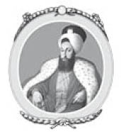

XVII : YAŞ ANTLAŞMASI
1774-1792
1774 yılında yapılan Kaynarca Antlaşması’yla on sekiz yıl boyunca barış hakim oldu. 1792 yılında yapılan Yaş Antlaşması’yla da Osmanlı İmparatorluğu’nun çöküşünü simgeleyen bir olay meydana geldi. On üç yıl boyunca I. Abdülhamid’in hükümdarlığındaki Osmanlı İmparatorluğu’nda yabancı ülkelerle barış söz konusuydu. Rusya ile yapılan son savaşlar yüzünde İmparatorluk yorgun düşmüştü. Sultan ve hükümeti hakkıyla devam ettirebileceğine inanmayan vekilleri, güçlü bir şekilde barış taraftarıydı. İmparatoriçe Katherine’nin kışkırtmalarına rağmen barış baki kaldı. Yetenekli ve bir o kadar da vicdansız olan bu kadın Kırım’ı tamamen ele geçirmek için dur durak bilmeden bu arzusunun peşinde koşturdu. Kaynarca Antlaşması’nın şartları gereği Kırım bağımsızlığına kavuşmuştu ve devletin başına da Tatar bir prens geçmişti. Ancak Rusya tarafından doğrudan ya da dolaylı yollardan Kırım’ın bağımsızlığının bozulması halinde bu durum Osmanlı için antlaşmayı bozmak anlamına geliyordu ve savaş sebebi olurdu. Ancak bunun yanında Osmanlı hükümdarlığının imparatoriçe ile savaşa girecek gücü yoktu. Bunun bilincinde olan imparatoriçe hiç şüphesiz ki bu yüzden birkaç sene daha harekâtlarını sürdürdü.
Katherine’nin amacına ulaşmak için attığı adımlar, daha önce topraklarını genişletmek için uyguladığı hareketleriyle çarpıcı bir şekilde benzerlik taşıyordu. Prenslerin çıktığı ailesinden Giray, Tatarlar tarafından seçimle Kırım’ın Hanı olmuştu. Rus temsilcileri de Giray yerine Şahin’i destekliyordu. Bu durumda hoşnutsuzluk yaratarak devlete karşı ayaklanma başlattılar. Bu arada her hangi bir genişleme ihtimalini kaçırmayan Katherine sözde huzuru sağlamak için bölgeye bir ordu gönderdi. Giray’ın tahttan indirilmesini zorla sağladı ve seçimlerle kendi istediği Şahin’i devletin başına geçirdi. Rus ordusunun yardımlarıyla başa gelen prens, Rus temsilcilerinin önerilerini dinlemenin gerekli olduğuna inandı ve bu sayede kendi halkı arasında sevilmeyen bir kişilik oldu. Prense karşı ayaklanma baş gösterdi. Prens de bu durumdan kurtulmak için imparatoriçeden yardım istedi. Bu sayede Rus ordusu yine sözde uzlaştırmacı görevi ile ortaya çıktı. Karşı gelen Tatarlar ya katledildi ya da ülkeden atıldı. Şahin’i tahtan çekilmeye zorladılar ve böylece imparatoriçe Kırım’ı kendi topraklarına kattı, sebep olarak da onları kötü yönetimden kurtarmak olarak gösterdi. Zavallı bir piyon olan Şahin de belli bir süre Rusya’da hapis yattı, daha sonra Türkiye’ye sürüldü ve burada da öldürüldü. Osmanlı hükümdarlığının Tatarları kurtarmak için bir savaşa girecek gücü yoktu. Böylece 1784 yılında iki büyük güç arasında bir antlaşma daha imzalandı, buna göre Rusya’nın Kırım üzerindeki hakimiyeti tanındı ve Tatarlar Karadeniz kıyılarındaki bölgelere yerleşti.
Daha sonra Katherine’nin daha büyük bir proje yöneterek Türkleri Avrupa’dan atma niyeti ortaya çıktı. 1779 yılında ikinci torunu dünyaya gelince adına Konstantine koyuldu.
Ona bakması için bir Yunan kadın tutuldu ve çocuğa Yunanca öğretildi. Bütün her şey sadece günün birinde İstanbul’un bir Yunan imparator tarafından yönetilmesini umut ettiklerini göstermek için yapıldı.
Bu arada Türkiye’de bazı sorunlar çıkmaya başladı, bu sorunların çoğu da Rus casuslar tarafından ortaya çıkarıldı. Yaşlı ancak çok cesur olan Cezayirli Hasan ki, artık Kaptan Paşa olarak çağırılıyordu, sultanın bütün güvenini kazanmıştı. Ayaklanmaları bastırmak için kesin emir almıştı.
1776 yılında Suriye’de ayaklanma başlatan Şeyh Zahir’i yendi. 1778 yılında Mora’da isyan çıkaran ve bu bölgeyi Orloff’un işgalinden kurtarmak için zamanında yardım alınan Arnavutları kovdu. Orloff’un yenilgisinden sonra Mora’da kalıp, yasalara aykırı olarak kendi üstünlüklerini ilan ederek herhangi bir ayrımcılık yapmadan Türkleri ve Yunanları yağmalayıp katlettiler. Hasan ise onları yenmeyi başardı ve bu zalim kabadayıları kovdu. Daha sonra Hasan Mısır’da Memlukluların çıkardığı isyanı bastırmak için görevlendirildi. Ordusuyla bölgeye giderek tekrardan sultanın otoritesini bölgeye yaydı. 1787 yılında tekrardan Ruslara karşı açılan savaş yüzünden İstanbul’a çağırıldı, yetmiş beş yaşındayken Karadeniz’de Osmanlı donanmasının başına geçti, daha sonra da ordunun başkomutanı oldu. Hayatı boyunca ilk defa talihi ona sırt çevirdi ve ciddi yenilgiler yaşadı.
İmparatoriçe Katherine’nin davranışlarından Türkiye’ye karşı çok kışkırtıcı olduğu anlaşılıyordu. 1787 yılında Katherine ile Avusturya İmparatoru II. Joseph arasında bir anlaşma yapıldı. Kasti olarak Türkleri Avrupa’dan atma niyetiyle onlara karşı birleşmeye karar verdiler. Osmanlı’nın elinde bulunan bölgeler iki güç arasında paylaştırılacaktı ve İstanbul’un başına Yunanistan geçecekti.
İmparatoriçe en gözde ve himayesi altında olan Prens Potemkin komutasıyla Kırım’da büyük bir üstünlük kazandı, Potemkin’in de niyeti ülkesinin topraklarını genişletmekti. İmparator Joseph imparatoriçe ile Herson’da buluştu ve Türkiye’ye açacakları savaşın ayrıntılarını konuştular. Bir zafer takı inşa edildi ve üzerine de “Bizans’a giden yoldur” yazıldı. Hemen ardından casuslar Eflak ve Moldova’yı karıştırmak için yollandı.
Kırım hanına ait olan Basarabya ve Ochakov kalelerinde Türklere karşı iddialar atılmaya başladı. Türkler bu iddialardan çok rahatsız oldu. Birkaç yıllık barış sayesinde toparlanmışlardı. Kinburn şehrini ger almak ve hatta Kırım’ı tekrardan ele geçirmek gibi umutları vardı. Bu düşünceye herkes sahipti ve dîvân ile birlikte savunma için kalelerin yenilenmesini beklemeden Avusturya ve Rusya’ya 15 Ağustos 1787 yılında savaş açıldı.
Osmanlı tarafından büyük bir ordu Ochakov’a yollandı, Dinyester Nehri’nin ağzında bulunan kaleye doğru ilerlediler, amaçları Kinburn’a arkadan saldırmaktı. Onlarla çalışması için Hasan komutasında bir donanma da yollandı, ordunun nehirden geçerek Kinburn’a varmasına yardım etti. Ancak ne yazık ki, Kinburn’daki Rus ordusu askeri bir deha olan Suwarroff komutasındaydı. Türk ordusunun büyük bir yarısının nehirden karşıya geçmesine izin verdi ve daha sonra karadan onlara saldırdı. Nicolaf’tan de küçük bir filo Osmanlı donanmasına saldırdı. Söz konusu strateji kesin başarı getirdi. Kinburn tarafına inan sekiz bin asker yenilerek katledildi. Hasan’ın neredeyse bütün filosu da yok edildi. Kinburn’a yapılan bu saldırı tamamen bozguna uğradı.
1787’de iki savaşçı ülkeyi daha fazla etkileyen bir şey daha olamazdı. 1788 yılının başlarında Avusturya imparatoru 10 Şubat’ta hiçbir neden göstermeden Türklere savaş açtı. Ancak Katherine ile yaptığı antlaşmanın koşullarını kendi bölgesinde çıkan sorunlar yüzünden erteledi. Daha sonra üstlendiği koşulları yerine getirmek için rahatladı. Türkler ise iki korkunç düşmanıyla yüz yüze geldi. Neyse ki Rusya güney bölgesindeki saldırısında tam güç kullanamadı; çünkü İsveç ile bir savaş patlak verdi. Bu durumda imparatoriçe, Moldova’ya ordu yollayarak Avusturya’ya yardım edemedi. Daha önce söz verdiği gibi Ege Denizi’ne de filo yollayamadı. Ancak Joseph iki yüz bin kişilik bir ordu toplayarak Türklere saldırmak için harekete geçti. Hemen ardından ne kadar beceriksiz bir general olduğunu kanıtladı. Savaşta emsali görülmemiş bir olay oldu ve imparator kendi askerlerine karşı zafer kazandı.
Rusya’dan yana bir tehlike olmadığını anlayan Türkler hemen bir ordu toplayarak Tuna Nehri’nden geçip, Mendia’da bulunan Wartersleben komutasındaki Avusturya ordusu ile çarpıştı ve zafer kazandı.
Joseph daha sonra yenilgiye uğrayan ordusuyla beraber Macaristan’ı korumaya gitti. Seksen bin askeriyle beraber veziriazama kolayca ulaşabileceği Slatina’da konuşlandı. Osmanlı’ya yapılacak olan saldırı için bütün hazırlıkların tamamlandığı anda imparator panik yaptı ve Temeşvar’a doğru geri çekildi. Geri çekilmeye gece yarısı başladı, bu durum orduda çok büyük bir kafa karışıklığına sebep oldu. Türklerin çok yakın ve saldırmak üzere olduğu haberi her yere yayıldı. Çok şiddetli bir panik baş gösterdi. Avusturya topçu sınıfı çok hızlı bir şekilde geri çekildi. Piyadeler ise geri çekilenleri Türkler sandı. Küçük nizamsız bir şeklinde dağılarak her yere ateş etmeye başladılar. Sabah olup da gün doğduğunda, nizamsız bir şekilde ateş açan birliklerin birbirlerini öldürdüğü ortaya çıktı. Bunun sonucunda tam tamına on bin asker muhabere dışı kalmıştı. Daha sonra Türkler gelerek gerçekten saldırdı. Avusturya ordusunu yendiler ve toplarıyla yüklerine el koydular. O yıl aynı bölgelerde bir daha savaş yaşanmadı. İmparator tedbir almaya çalışırken otuz bin adamını kaybetti, kırk bini de hastalıktan öldü. Bir daha ordunun başına geçmeye teşebbüs etmedi.
1788 yılında Ağustos ayına kadar Rusya da fazla bir girişimde bulunmadı, Potemkin kendini Ochakov’a istila eder halde buldu. Suwarroff yardıma gelene kadar kuşatma aralık ayına kadar sürdü. Onun cesur önerisiyle kaleye saldırıldı, bir çok kayıp vermelerine rağmen, Rusya bütün karşı çıkışları göz ardı ederek şehre girdi. Korkunç bir katliam sahne aldı. Şehir Rus askerlerinin eline bırakıldı. Kırk bin kişilik nüfusa sahip olan şehirden sadece birkaç yüz tanesi kaçabildi yirmi bin kişilik garnizon ise kılıçtan geçirildi. 1788 seferi onca kaybedilen cana rağmen Türklere çok zarar vermedi. Ochakov’u kaybettiler ve Kinburn ile Kırım’ı tekrar geri alma hayalleri yok oldu; ancak Avusturya’ya karşı güçlü bir savunma gösterdiler. Joseph’in saldırısı rezil bir şekilde başarısız oldu.
Bir sonraki yıl düzenlenen sefer ise Türklere daha çok zarar verdi. 1789 yılının başlarında sultan I. Abdülhamid öldü. Onun yerine yirmi yedi yaşındaki yeğeni III. Selim geçti, çok gayretli bir gençti ve vatanseverdi. Osmanlı’nın çoğu vârisine yapıldığı gibi amcası onu haremde inzivaya çekerek hapsetmedi. Olabildiğince özgürdü. Babası Mustafa ona, devletin tehlikelerle dolu olduğunu ve büyük reformların yapılması gerektiğini anlatan anılarını bırakmıştı. Bu genç adam da anıları uzun uzun çalıştı. Köklü değişiklikler yapılması gerektiğinin farkındaydı, çok akıllıca bir hareket yaparak ordusunun başına geçmedi, ordunun toparlanması için hiçbir atılım yapmadı ve onları şevklendirecek bir harekette de bulunmadı. Sarayındaki bütün birikimi hazineye verdi ve haremin deki kadınlarında hazineye yardım için mücevherlerini bağışlamalarını istedi. Reformları gerçekleştirmek için çok hevesliydi. Onun için hazırlanmış olan kaderden çok daha iyisine layıktı. Onun hükümdarlığı dönemi, çok acı bir şekilde ülkesinin gerilemesine sebep olacaktı.
İmparator Joseph iyi gitmeyen sağlığı sebebiyle Avusturya ordusunun başına geçemedi, bu, Türkler için çok büyük talihsizlikti. Yerine yedi yıl savaşlarında görev almış eski asker İskoçyalı Mareşal Loudon geçti, rütbeliler tarafından eğitilmişti ve yetenekleriyle ün salmıştı. Onun için “Centilmence savaşır” denirdi. Hızlı karar verme yeteneği ile tanınırdı ve yetmiş beş yaşını geçkin olmasına rağmen hâlâ zindeydi. Avusturya ordusuna taze bir ruh gelmişti. Mareşal Loudon Sırbistan ve Bosna’yı işgal etti ve büyük bir başarı kazandı. Bosna’da Müslüman halk tarafından ciddi bir şekilde direnişe şahit oldu. Sırbistan’da ise Müslüman hükümdarlarından iğrenen Hıristiyan halkın yardımını aldı. Bu bölgelerin büyük bir bölümü ele geçirildi. Prens Coburg yönetimindeki diğer bir ordu, Suwarroff komutasındaki Rus ordusunun da katılımıyla Moldova’ya ilerledi. Sultan da Hasan’ı veziriazam ve ordunun komutanı olarak atadı. Hasan komutan Suwarroff gibi bir askerle karşılaşacak eşitlikte değildi. Moldova sınırında bulunan Fokshani’de Coburg’a karşı büyük bir ordu topladı. Türklerin üstün gücü karşısında Coburg şaşkına dönmüş olmalı ki, Suwarroff’un yapacağı bir iş olmasa da Avusturya ordusunu kurtarmak için otuz altı saatte dağlık bir bölgeden doksan altı kilometre boyunca geri çekildi. Akşam üstü gelebilen Suwarroff ise hemen Türk ordusuna saldırmak için hazırlıklara başladı. Bir sonraki gün, güneş doğmadan iki saat önce Türk kampına saldırdı. Daha zekice bir hareket yapılamazdı. Süngülerle saldıran Ruslar kampı ele geçirdi. Türkler bütün ağır silahlarını ve depolarını kaybetti. Aynı yılın eylül ayında Selim tarafından bir ordu daha yollandı ve onlar da Suwarroff tarafından yenilgiye uğratıldı.

III. Selim
İki büyük yenilgi İstanbul’da panik yarattı. Sultan halkını ve yönetimdekileri sakinleştirmek için itibarını zedeleyen ayrıca bir çok savaşta zafer kazanan, Yeniçerilerin daha ciddi bir şekilde eğitilmesini öneren ve reddedilen yaşlı ve cesur Hasan’ı öldürttü. Savaşı kaybetmelerinin sebebi olarak genelde Türkler ordunun başındaki kişiyi suçlar ve öldürtürdü. Komutanın vatan hainliği yaptığı ileri sürülürdü. Aynı devrim savaşlarında başarısız olan generallerin Paris Kongresi’nde giyotine yollanması gibi; ancak şunu kabul etmek gerekir ki, uyarmak amaçlı bir şeyler yapılınca gelecektekiler daha şevkli olur.
Daha kuzeye çıkarsak 1789 seferinde Belgrat ve Semendire Avusturyalılar tarafından işgal edildi. Bir sonraki yıl Avusturya ve Rusya’nın zafer akımı iki olayla yerinde saydı. İlki; İmparator Joseph’in merkezci yönetim şeklini baskıyla ve düşüncesizlikle uygulamaya çalışmasından dolayı ayaklanmalar meydana geldi, bu sebeple ellerini Türklerin üzerinden çekerek ordularını geri çağırdı ve ayaklanmayı bastırmaları emredildi. 1790 yılının başında da öldü. Yerine zeki ve sağgörülü kardeşi Leopold geçti, Joseph’e hiç benzemiyordu ve kardeşinin politikasını düzeltti. Türklere karşı asla Rusların yardımını istemedi.
Avusturya’nın savaştan çekilmesinin bir diğer sebebi ise Prusya, İngiltere ve Hollanda ile politik ilişkilere girmiş olmasıydı. Bu güçler birbirleri arasında savunma anlaşması yapmıştı ve çoktan beraber hareket ederek büyük etkiler yaratmışlardı. Hollanda’daki Fransız baskısını ortadan kaldırdılar. Rusya ve İsveç’in arasında girerek aralarına barışı getirdiler. Şimdi de hiçbir gözdağı vermeden Türkiye ile Avusturya arasına girerek arabuluculuk yapmayı teklif etmişlerdi. Bu güçler arasında ateşkes imzalandı. Joseph’in ölmesi bu anlaşmayı kolaylaştırmıştı. Şartlar Türkler tarafından kabul edildi. Savaş öncesindeki şartlar Sistova (Ziştovi) Antlaşması’na dahil edildi. Avusturya’nın aldığı Bosna, Sırbistan, Eflak ve Semendre ile Belgrad’daki kalelerle birlikte Hırvatistan’daki küçük bir bölge olan Eski Orsova hariç Türkiye’ye geri verildi. Avusturya’nın çok önemli kazanımları olmadı ve savaşta da çok zayıf bir dönüş yaptı. Ancak yeni İmparator Leopold, Polonya ya da Türkiye’nin parçalanmasından paylarına bir şey düşmesini istemiyordu. Onun zamanında, daha sonra yaşanan olaylar farklı sonuçlar doğurdu ve Polonya ihtimal dâhilinde olsa da sömürülmedi.
Avusturya’nın Ruslar ile ortak olup Türklere karşı birlikte hareket etme anlaşmasından çıkması İmparatoriçe Katherine için büyük sorun yarattı. Ancak İsveç ile yaptığı barış antlaşmasıyla dengeler tekrardan sağlandı ve mevcut düşmanına saldırmak için karada ve denizde bütün gücünü kullanabilecekti. Hâlâ Türkleri Avrupa’dan atarak İstanbul’a Yunan imparatoru getirme projesine bağlıydı. Yunan halkını ikna etmek için Yunanistan’a bir çok casus yolladı. “Hıristiyanlığın düşmanı olan ve ülkeyi zorla alan düşmanına karşı birlik olmaları, Yunanistan’ın eski özgürlüklerini ve bağımsızlıklarını kazanması için yardım etmelerini istedi.”
1790 yılının başında Yunanistan’dan bir temsilci heyeti St. Petersburg’da imparatoriçeyi ziyaret etti ve dileklerini ilettiler.
Biz hiçbir zaman (öyle söyleniyor) sizden hazine istemedik, şimdi de istemeyeceğiz; biz sadece satın alamayacağımız için savaşa girmek amacıyla top mermisi ve barut isteyeceğiz. Barbar Müslümanlardan kurtulmamız ancak sizin sayenizde olur. Onlar ki, bizim ülkemizi zorla aldı. Atina ve Lakedaimōn’un (Sparta) soyundan gelenleri zalim, umursamaz ve vahşi olandan kurtararak özgür bırakmanızı istiyoruz. Öyle bir millet ki, önemini hâlâ kaybetmedi, özgürlük ateşiyle yanıp tutuşuyor, barbarların yok edemediği bir milletiz.
Buna karşılık imparatoriçe yardım sözü verdi. Daha sonra onlara genç Prens Constantine’yi tanıştırdı ki, prens yunanca konuştu; “Gidin ve isteğiniz her şey yerine getirilecektir.”
Levant’taki zengin Yunanlılar amaçlarına destek vermek için çoktan süvari birliği ile on üç firkateyni bir araya getirmişti. İmparatoriçenin emriyle Trieste’de silahlar dağıtıldı ve büyük Yunan Amiral Lambro Caviziani komutan olarak başlarına verildi. Süvari birliği toplandıktan sonra Ege Denizi’ne açıldılar ve üs olarak seçtikleri Sakız Adası’na gittiler. Aynı sularda bulunan Türk donanması ise çok kötü durumdaydı. Türk gemilerinin en iyileri Karadeniz’de bulunmaktaydı. Ancak Cezayir korsanları Osmanlı’nın yardımına koştu ve birkaç Türk gemisiyle birlikte Yunan üssünde deniz savaşı meydana geldi.Yunanlıların bütün gemilerini batırdılar.
Karada bulunan Rus ordusu daha talihliydi. 1790 yılında yaptıkları başlıca operasyonları Tuna Nehri’nin kuzey kolundan altmış beş kilometre uzağında bulunan çok önemli İsmail Kalesi’neydi. Bu şehir Türklerin elinde olduğu sürece, Basarabya’dan Bulgaristan’a doğru işgalci birlikleri çıkarmak imkânsızdı. Kale çok büyük bir garnizon tarafından savunuldu. Suwarroff yine Potemkin tarafından çok basit bir emirle kolordunun başına getirildi. “Ne pahasına olursa olsun, İsmail’i alacaksın”. Kalenin yakınlarına geldikten altmış gün sonra Suwarroff askerlerine saldırmayı emretti. “Kardeşlerim, karargah olmayacak, kumanyamız sınırlı.” Çok feci can kayıplarıyla şehir yerle bir oldu. Suwarroff’un bile daha önce tecrübe etmediği şekilde vahşice katliamlar gerçekleşti. Otuz dört bin Türk yok oldu. Suwarroff katliamlar bittiğinde gözlerinin yaşlarla dolduğunu bir arkadaşına itiraf etti. Böylesine bir katliam son bulduktan sonra döktüğü sahte gözyaşları alışılmış bir olaydı, olayları dindirmeye çalışmadı bile. Kazanılan zaferin haberleri St. Petersburg’a ulaştığında imparatoriçe İngiliz elçisi Sir C. Whitworth ile görüşüyordu ve ona alaycı bir gülüşle şu sözleri söyledi: “Umarım beni St. Petersburg’dan atmak isteyenler İstanbul’da emekliliğimi geçirmeme izin verirler.”
Bu arada İngiltere, Prusya ve Hollanda, Avusturya ve Türkiye arasında arabuluculuk yapılıp, barışın gerçekleşmesi sağlandı. Daha önce Rusya ve Türkiye arasında yapılan anlaşmadaki gibi savaş öncesi durumlar geçerli olacaktı. 1790 yılında imparatoriçeye de arabuluculuk yapmayı önerdiler. Prusya kralının bu teklifine kızgınlıkla cevap verdi ve aracılığı kabul etmedi. Şöyle söyledi: “İmparatoriçe, ne zaman isterse o zaman barış yapar ya da savaşır, hiçbir şekilde kendi hükümetiyle ilgili ilişkilerde müdahaleye izin vermez.” Aslında Ochakov’un, Dinyester Nehri ile Bug Nehri’nin arasındaki bölgesinin tamamen kendi hakimiyetine geçeceği ve diğer aldığı yerlerin Türkiye’ye geri verilmesi koşulunun olduğu bir barışa çok da soğuk bakmıyordu. Birleşik kuvvetler bu koşulları kabul etmek istemedi ve Ochakov’u Türkiye’ye geri vermek için askeri güç toplamaya başladı.
Türklerin Büyük Britanya’dan imparatorluğuna yardım etmesi için teklif götürmesi yeni bir politika anlayışını ortaya koydu. Hükümetleri 18. yüzyılın büyük bir bölümünde Rusya ile yakın ilişkiler içersindeydi. Güttüğü bu politika Fransa’yı kıskandırıyordu. Rusya’nın denge getireceğine inanıyordu. Rusya’nın Türklere karşı yürüttüğü projelere asla karşı gelmedi. Dış politikayı yürüten Lord Chatham Türkler ile yakın ilişki içersinde olmayı hiçbir zaman istemedi. Ayrıca 1784 yılında imparatoriçenin Kırım’ı almasına aldırış etmediler. O zamanlar Charles Fox İngiltere’nin dışişleri bakanıydı, o da Chatham gibi Rusya’nın tarafını tutuyordu. Şöyle yazdı:
Benim yürüttüğüm dışişleri politikası çok köklüdür. Rusya da dâhil olmak üzere kuzeydeki kuvvetlerle yürüttüğümüz birlik bütün İngilizlerin devam ettireceği bir sistemdir.
1790 yılında Pitt’in güney doğuda Türklerin yararına dengeyi sağlamak için Rusya’ya karşı Prusya ile birlik olması çok farklı bir yaklaşımdı.
İngiliz hükümeti arabuluculuk teklifini yeniledi. Bir elçiyi St. Petersburg’da bulunan imparatoriçeye bu teklifi sunmak için gönderildi. Eğer Rusya savaş öncesi durumları baz alarak bir barış antlaşmasını kabul ederse, İngilizlerin Türklerden, Kırım’dan vazgeçtiklerine dair resmi bir söz alacağını söyledi. İmparatoriçe bakanları tarafından yolladığı cevapta, birleşik kuvvetlerin benzersiz bir davranışta bulunmasından dolayı kızgın olduğunu, sonsuz bağımsızlığı olan bir egemenliğe rastgele söylemlerde bulundukları sinirlendiğini ve onun onuruna uyan olan koşulları belirlemek için yardım istemediğini belirtti. Şanlı ve şerefli uzun süren hükümdarlığını küçülteceğine, imparatoriçe her türlü riski alırdı. Ayrıca sadece İngiltere krallık makamını kabul ederdi:
Ne kadar her şeyi güvence altına alacaklarını belirtseler de o Ochakov ve bölgesi için ısrar etti.15
15 Whitworth To Leeds, 10 Ocak 1781, Adli Sicil Bürosu.
Bu cevap çok önemliydi; çünkü Rusya’nın niyetinin apaçık ortaya seriyordu. Rusya Türkleri Avrupa’dan atmak için her türlü savaşa hazırdı. Rusya bir çok zafer kazanmasına rağmen yaralılardan ve ölümlerden çok fazla kayıp verdi, ayrıca hastalıklar sebebiyle de kayıpları oldu. Ayrıca imparatoriçenin elleri yine bir sorunla doluydu. Polonya ile yaşadığı sorun Türkler ile ilgili projesine devam etmesini engelliyordu. İkinci bir parçalamaya karar verildi. Bu sorundan kurtulmak onun için çok önemliydi. Ancak buna rağmen Ochakov’a bırakmıyordu.
Bu arada İngiliz ve Prusya Hükümetleri birbirleri ile iletişim halindeydi. Ochakov ve bölgesinin geri verilmesi konusunda ısrarcı olmayı anlaştılar ve savaş öncesi koşulları baz alarak barış olmasını istiyorlardı. Avusturya ve İsveç söz konusu şartlar altında barış yaptı, birleşmiş kuvvetler de Türkler için bundan daha fazlasını istemiyordu. Ayrıca söz konusu bölgeler Türklere verilmezse Türkler ihanete uğramış hissedecekti.
Savaş öncesi koşulları kabul ettirmek adına birleşik kuvvetler silahlanarak arabuluculuk yapmaya karar verdi. İngiliz hükümeti Baltık Denizi’ne otuz dört gemilik bir filo yolladı bu sırada Prusya’da Livona’ya doğru askerî birlikle ilerlemeye başladı. Hiçbir kuvvet bu sefer sırasında bölgeleri ele geçirmeye çalışmayacaklardı, tek amaçları Karadeniz’de Osmanlı hükümdarlığının güvenini sağlamak olacaktı.
Bu durumda Mr. Pitt, 28 Mart 1791 yılında Avam Kamarası’na bir mektup gönderdi ve kraldan, Kraliyet birliği için levazım istedi. Pitt’in konuşmasını özetleyen Mr. Lecky, Pitt’in kendini haklı çıkarmak için çoğunlukla Prusya’nın yararı adına, Büyük Britanya’nın onu savunmak zorunda olduğunu söyledi.
Pitt’in söylemi ile:
Bütün Avrupa kuvvetleri arasında Prusya İngiltere’ye yarar sağlayacak en önemli ülkedir. Ayrıca söz konusu olaylar onun için çok tehlikelidir. Avrupa kuvvetleri arasında Türkiye İmparatorluğu çok önemli bir ülkedir, eğer bu imparatorluk çöker ya da yok olursa hatta istikrarsız ve tutarsız bir duruma düşerse Prusya bundan çok ciddi bir şekilde etkilenecek…Rusya’nın genişlemesinin diğer Avrupa ülkelerine maddî zararlar vermeyeceğini düşünen var mı?...Polonya’ya Prusya kadar etki etmeyebilir. Bu güçlü ve hırslı komşu kendini Prusya sınırlarında toparlamaya çalışırken, Prusya onlara yardım edemeyecek duruma geldiğinde Danimarka ve İsveç’in hali ne olur? Daha sonra bütün Avrupa’nın güvenliği tehlike altına girer. Türklerin memnuniyetsizce gireceği savaşın sonu ne olursa olsun, Rusya bu savaşla güçlenirse, bu durum sadece iki gücü etkilemeyecek, geri kalan Avrupa devletlerinin hepsini etkileyecek.
Baltık Denizi’ne çok büyük ve Karadeniz’e de küçük bir filo yollanmasını istedi. Pitt’in sunduğu bu öneri Charles Fox tarafından şiddetle reddedildi. Yaptığı konuşma ile Avam Kamarası’nı ve ülkeyi etkiledi. Konuşmasını şöyle sürdürdü:
Rusya’nın Ochakov ve çevresini almak istemesindeki ısrarcılığı son derece adalet dışı ve politikaya uygun değil. Bu durum adil değil; çünkü Rusya savaşta mütecaviz ülke değildi, kazandığı büyük başarıya rağmen imtiyaz vermeye razı oldu ve dengeli davranışlar sergiledi. Bu politik bir yaklaşım değildir; ancak pahalı ve tehlikeli bir savaşın sonucu olarak feragat etmek olabilir, muhtemelen bu da sonsuza kadar sürer. İngiltere’ye karşı ters bir tutum göstermeyen bu denli değerli bir müttefik bizim için değerlidir. Rusya İngiltere’nin müttefikidir. Söz konusu politikayla İngiltere ne kazanacak? Rusya’nın Dinyester’deki kaleyi ve Karadeniz’in çevresindeki çorak toprakları elde etmesiyle İngiliz kuvvetleri ne kazanacak ya da ne kaybedecek? İngiltere’nin savunma müttefiki Prusya ile birbirlerine bağlı oldukları düşüncesi son derece saçma ve tehlikelidir. Eğer müttefikimiz bu şekilde bir yol seçerek olayı çözümlemek istiyorsa, hücum müttefiklerinin uğursuzluğunu üstüne çeker ve bizi Avrupa’da çıkan her münakaşaya dahil eder. Biz ancak herhangi bir saldırı olduğu takdirde Prusya’ya malzeme yardımında bulunuruz. Ona karşı bir saldırı gerçekleşmedi. Son derece barış içersinde yaşıyor. Kesinlikle tehdit altında da değil. Rusya’nın kazanacağı yeni topraklarla Prusya’nın zarar göreceği de şüpheli, gelecekte Prusya’ya savaş açmak için kullanılma ihtimali olan, başka bir ülkenin kendi topraklarını genişletmesine engel olmak da İngiltere için çok anlamsız.
Fox da daha önce Fransız Devrimi’nde anlaşmazlığa düşmüş olsalar dahi çok güçlü bir söylev ile Burk tarafından desteklendi.
Osmanlı İmparatorluğu Avrupa dengeleri söz konusu olduğunda yeni bir imparatorluk. Türkler, genel olarak kendini tamamen Avrupa’ya kabul ettirmeye çalışan Asyalılardır. Onlara Avrupa’da bir ağırlık kazandıracak politika ve bakanlık, gelecek nesillerin lanetini hak etmektedir. Tuna Nehri’ne sınır olan güzeller güzeli ülkelerin tahrip edilmesi için Avusturya İmparatorluğu’na verildiğinde yaşadığı korkuyu anlattı. Devlet adamlarımızı aynı şekilde zalim ve insanî olmayan bu politikayı kabul etmeye zorlayarak onları da ateşe mi atalım? Pitt gibi zeki bir adam, ülkeyi tamamen maceracı bir politikanın içine sokacak, en eski müttefikimiz ve dostumuzu kurban edecek ve kendi babasının kurduğu politikayı kabul etmeyecek boş ve uçarı esaslar için gayret gösterecek koşulları onaylarsa bu parlamento daha önce görülmemiş bir politikayla baş başa kalır.
Pitt’in önergesi geçirilmeye çalışıldı; ancak her zamanki kazandığı kendi partisinin oylarından azınlıktaydı. Konu üzerine iki ayrı tartışma ortaya çıktı. Buna rağmen Pitt çoğunluğu sağladı ve böylece Avam Kamarası ve ülkenin çoğunluğu Türkiye adına Rusya ile savaşa girmek istemediğini belirtmiş oldu. Pitt akıllıca bir iş yaparak savaş kararından vazgeçti. Avam Kamarası’ndan teklifini geri çekti. Dışişleri Bakanı olan Leeds dükü kendi rızası ile görevinden ayrıldı. St. Petersburg’da bulunan İngiliz elçisine acilen bir mesaj daha iletildi ve tehdit içeren gönderinin çara ulaşmasını neyse ki son anda engellediler.
Charles Fox’un Pitt’i politik anlamda yenmesini Sir E. Creasy vicdansız ve vahşi bir politika olarak değerlendirdi. Bay Leckly ise Fox’un argümanının içeriğini kabul etti ve Pitt’in yaklaşımını ise ayıpladı. Particilik anlayışı aklanamadı. Charles Fox’u suçlayacak bir durumu asla kaçırmazdı, Amerikan kolonileriyle yaptığı savaş ve Fransa’daki devrim hareketlerinde de aynısını yapmıştı. Belki bu konuda şunu söylememize izin verilebilir; yüksek otoritelere rağmen Pitt’in Rusya’ya karşı savaş açma teklifinin reddedilmesiyle ülkeye çok büyük bir yarar sağlandı.
Anayasa tarihinde başbakan tarafından yapılan teklifin oylarla değil de Avam Kamarası’ndaki tartışmalarla hükümet ve krallık tarafından reddedilmesi bir ilkti. Bu erdemli olayı Fox sağlamıştır.
Bu arada Türkler Tuna Nehri’nde yenilgiye uğramaktaydı. Ordularını toparlamak için umutsuz çabalar sarf etmekteydi ancak Rusya’nın emektar askerlerine karşı gelebilecek durumda değillerdi. 1791 yılının Ocak ayında Kutuzov idaresindeki Rus ordusu Babadağ’da Osmanlı ordusuna savaş açtı. Kırk bin kişilik Rus ordusuyla Prens Repnin Tuna Nehri’nin kıyısındaki Mokşi’de yetmiş bin Türk askerini yok etti. Türkler aynı şekilde Karadeniz bölgesinde de talihsizdi. Rus ordusu Kuban bölgesini istila etti ve Türk ordusunu yendi, böylece bütün bölgeyi hâkimiyeti altına aldı.
Bunca olayın ardından Divan çaresiz kaldı. Hiçbir bölgeden Türklere yardıma gelen olmadı. Anlaşma yapmak istediler. Aynı zaman da İmparatoriçe de bunu istiyordu. Kosciuszko komutasında bir orduyla Polonya’da çıkan ayaklanmayı bastırmak için bölgeye gitmek istiyordu. Basarabya, Eflak, Moldova ve Kuban’da aldığı zaferlere rağmen sadece Ochakov’deki kale ve Dinyester ile Bug Nehri’nin arasında ki ülkeyi istiyordu, diğerlerinden vazgeçmeye hazırdı. 1791 yılının Ağustos ayında hiçbir arabuluculuğa gerek kalmadan antlaşma şartları iki taraf tarafından kabul edildi. Bir sonraki yılın Ocak ayında ise bu şartlar Yaş Antlaşmasının temelini oluşturdu. Bu antlaşmaya göre, Dinyester Nehri Rusya’nın yeni sınırını çizdi, ve batısında kalan bütün bölgeler Türklerin oldu. Aynı zamanda Rusya Kuban’ı da Türklere verdi; ancak antlaşmaya imparatoriçenin bu bölgedeki küçük eyaletlerin koruyucusu olduğu da eklendi.
Potemkin’in Tuna eyaletleri dışında bölgelere yayılması yasaklandı. İstanbul’un bir Yunan İmparatorluğu olması hayali ise ertelendi. Polonya doğumlu olan Potemkin Rusya ordusundaki çavuşlar tarafından büyütülmüştü, yedi milyon sterlinlik bir servet bırakarak antlaşmadan birkaç gün sonra öldü.
Dört yıl içersinde imparatoriçe Polonya’nın parçalanmasını sağladı, Rusya için aslan payını aldı. Eğer yaşasaydı, bölgeyi Osmanlı İmparatorluğu’na saldırmak için kullanabilirdi. Bu arada Yunanistan onlara hükmedenlerin merhametli kollarına terk edildi.